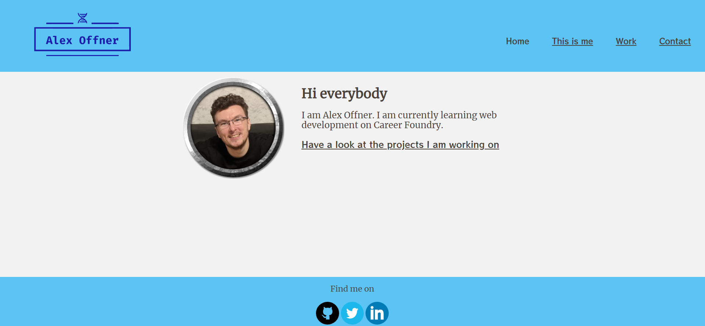
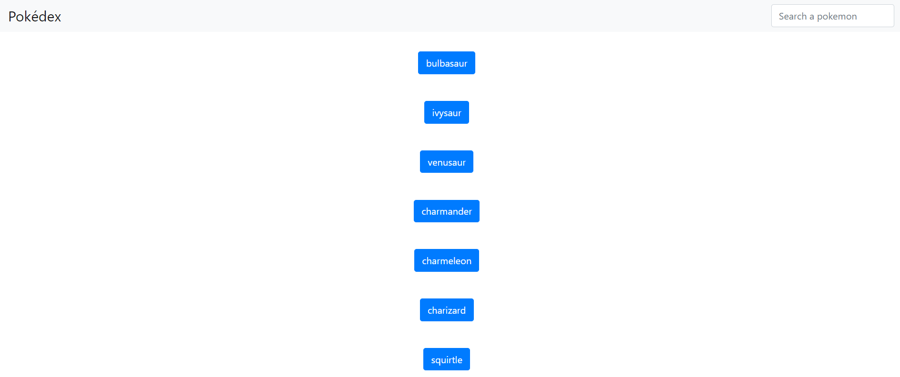
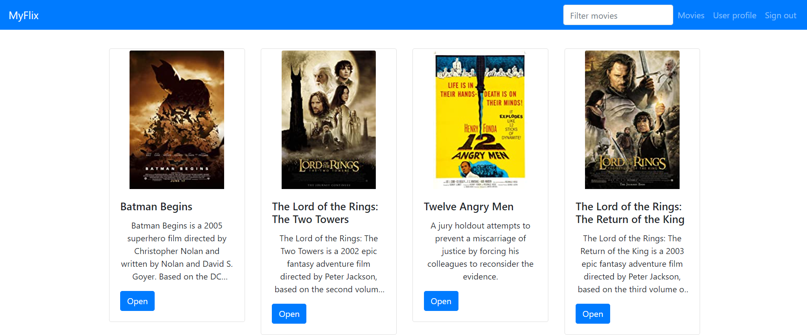
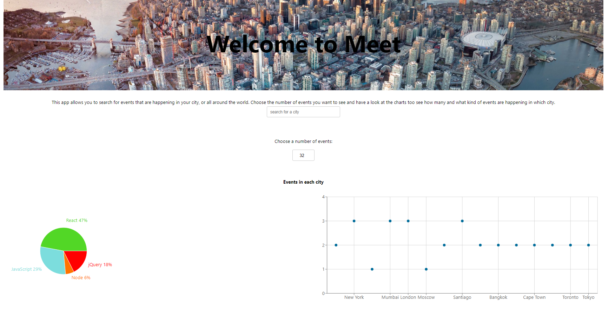
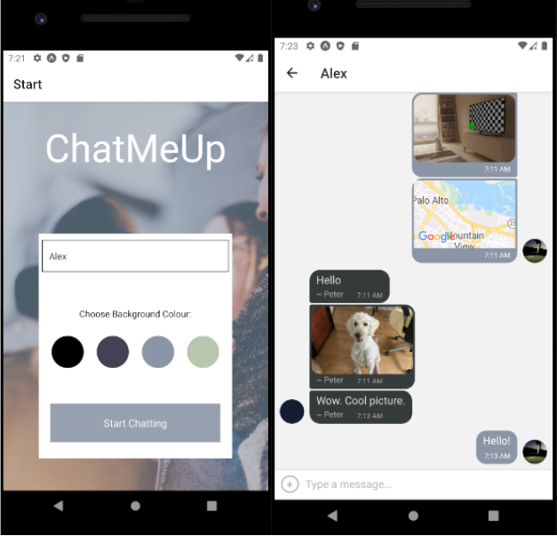
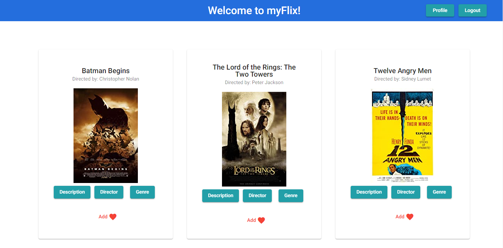

My work
Portfolio of Alexander Offner
For this project I was responisble for the frontend. I also created the HTML and CSS layout.
or
Pokédex App
I created a small pokédex app with an external API to show a list of pokemon. Using iQuery and bootstrap for the design, a modal with information of the pokemon will appear when clicking on it. The search bar will help sort the pokemon by name. I was responsible the basic HTML, CSS and JavaScript code, but used external polyfills.
or
Movie App
This project shows the server-side component of a movies web application. Users can create an account, log in and access movies, directors, actors and genres. They can also create a list of favourite movies. It was created with Node.js and Express and the database was build in MongoDB.
or
Meet App
This serverless, progressive web application was build with React using test-driven development (TDD). The app uses an external API to access upcoming events for cities all around the world. OAuth2 autehntication and AWS Lambda as authorization server keeps the app safe and secure. A service worker enables users to access parts of the app offline. Recharts is used to visualise the data of the event types and number of events in each city.
or
ChatMeUp
This mobile chat app was developed with React Native. The app allows users to enter a common chat room, send and recieve messages, take pictures and share their location. The platform Expo was used to test the native app on Android and iOS devices. Gifted Chat, an React Native framework helped to set up the basic chat room. The database Firebase helped to store messages and pictures online.
Movie App Angular
I created another client side for my Movie App. To learn more frameworks this time I used Angular for the client side. As in the original version developed with react, users can create an account and login. After that they can access a list of movies and add them to their list of favourites. Users are also able to change their profile information or delete their account.
or